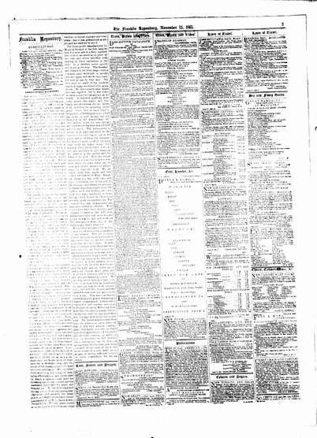
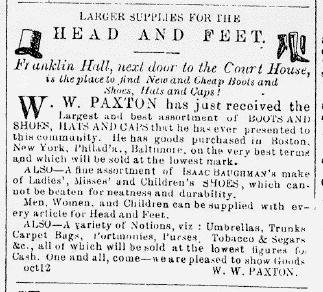

|


|
Franklin Repository and Transcript: Feb. 1, 1860, page 3 |
|
"Non-news" stories tended to appear in column 1, such as those on February 1, 1860 about proper behavior for young men and women, and a travel report from a doctor in New England. Advertisements from both Franklin County and from merchants in New York, Pittsburgh, and Philadelphia, however, comprised most of page 3. At first glance, advertisements appear to differ little from newspaper to newspaper in the Valley. All carried ads for hotels, shoes, patent medicines, farm supplies, and so on. Even advertisements, however, could reflect political leanings. On February 1, 1860, for example, the Valley Spirit carried an article on page 5 lambasting Hinton Helper, a North Carolinian whose book, critical of slavery and slaveowners, caused a crisis in the election of the Speaker of the House when several Republicans signed a statement in support of the book's publication. Meanwhile, the Republican-oriented Repository carried an ad on the very same day on page 3 from a book agent in New York who fed on political antagonisms to sell copies of Helper's book to the (presumably Republican) readers of the Repository. Reading in part "This is the work that is creating so much excitement IN CONGRESS," the bookseller encouraged Chambersburg citizens to "get the unabridged edition and . . . have all the power of HELPER'S KEEN PEN!" In this way, too, it becomes clear that while newspapers printing in the same county seemed to have vastly different ideas of what was important "news," they nevertheless engaged in the same national environment. Close reading of the papers allows one to gauge the different spin placed on events that no paper could ignore. |